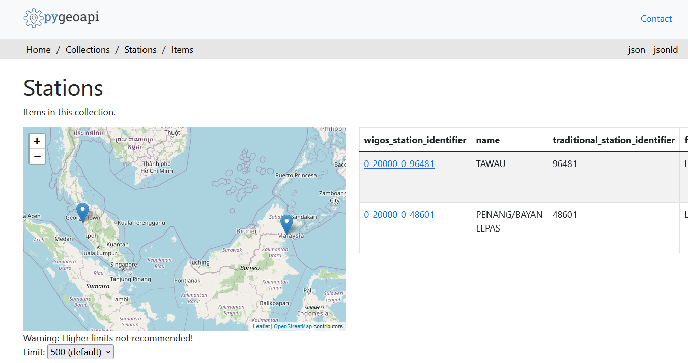

Configurazione dei metadati della stazione
Risultati di apprendimento
Alla fine di questa sessione pratica, sarai in grado di:
- creare un token di autorizzazione per l'endpoint
collections/stations - aggiungere metadati della stazione a wis2box
- aggiornare/eliminare i metadati della stazione utilizzando wis2box-webapp
Introduzione
Per la condivisione di dati a livello internazionale tra i Membri dell'OMM, è importante avere una comprensione comune delle stazioni che producono i dati. Il Sistema Globale Integrato di Osservazione dell'OMM (WIGOS) fornisce un quadro per l'integrazione dei sistemi di osservazione e dei sistemi di gestione dei dati. L'Identificatore di Stazione WIGOS (WSI) viene utilizzato come riferimento univoco della stazione che ha prodotto uno specifico set di dati di osservazione.
wis2box ha una raccolta di metadati delle stazioni che viene utilizzata per descrivere le stazioni che producono i dati di osservazione e dovrebbe essere recuperata da OSCAR/Surface. I metadati delle stazioni in wis2box sono utilizzati dagli strumenti di trasformazione BUFR per verificare che i dati di input contengano un Identificatore di Stazione WIGOS (WSI) valido e per fornire una mappatura tra il WSI e i metadati della stazione.
Creare un token di autorizzazione per collections/stations
Per modificare le stazioni tramite wis2box-webapp dovrai prima creare un token di autorizzazione.
Accedi alla tua VM studente e assicurati di essere nella directory wis2box-1.0.0rc1:
cd ~/wis2box-1.0.0rc1
Quindi accedi al container wis2box-management con il seguente comando:
python3 wis2box-ctl.py login
All'interno del container wis2box-management puoi creare un token di autorizzazione per un endpoint specifico utilizzando il comando: wis2box auth add-token --path <my-endpoint>.
Ad esempio, per utilizzare un token generato automaticamente casuale per l'endpoint collections/stations:
wis2box auth add-token --path collections/stations
L'output sarà simile a questo:
Continue with token: 7ca20386a131f0de384e6ffa288eb1ae385364b3694e47e3b451598c82e899d1 [y/N]? y
Token successfully created
Oppure, se vuoi definire il tuo token per l'endpoint collections/stations, puoi utilizzare il seguente esempio:
wis2box auth add-token --path collections/stations DataIsMagic
Output:
Continue with token: DataIsMagic [y/N]? y
Token successfully created
Per favore crea un token di autorizzazione per l'endpoint collections/stations utilizzando le istruzioni sopra.
Aggiungere metadati della stazione utilizzando wis2box-webapp
wis2box-webapp fornisce un'interfaccia grafica utente per modificare i metadati della stazione.
Apri wis2box-webapp nel tuo browser navigando su http://<tuo-host>/wis2box-webapp:

E seleziona stazioni:

Quando fai clic su 'add new station' ti viene chiesto di fornire l'identificatore della stazione WIGOS per la stazione che desideri aggiungere:

Aggiungi metadati della stazione per 3 o più stazioni
Per favore aggiungi tre o più stazioni alla collezione di metadati delle stazioni del tuo wis2box.
Utilizza stazioni del tuo paese se possibile, specialmente se hai portato i tuoi dati.
Se il tuo paese non ha stazioni in OSCAR/Surface, puoi utilizzare le seguenti stazioni per lo scopo di questo esercizio:
- 0-20000-0-91334
- 0-20000-0-96323 (nota l'elevazione della stazione mancante in OSCAR)
- 0-20000-0-96749 (nota l'elevazione della stazione mancante in OSCAR)
Quando fai clic su search, i dati della stazione vengono recuperati da OSCAR/Surface, tieni presente che questo può richiedere alcuni secondi.
Rivedi i dati restituiti da OSCAR/Surface e aggiungi i dati mancanti dove necessario. Seleziona un argomento per la stazione e fornisci il tuo token di autorizzazione per l'endpoint collections/stations e fai clic su 'save':


Torna all'elenco delle stazioni e vedrai la stazione che hai aggiunto:

Ripeti questo processo finché non hai configurato almeno 3 stazioni.
Derivare informazioni sull'elevazione mancanti
Se l'elevazione della tua stazione è mancante, ci sono servizi online per aiutare a cercare l'elevazione utilizzando dati di elevazione aperti. Un esempio è l'API Open Topo Data.
Ad esempio, per ottenere l'elevazione alla latitudine -6.15558 e longitudine 106.84204, puoi copiare-incollare il seguente URL in una nuova scheda del browser:
https://api.opentopodata.org/v1/aster30m?locations=-6.15558,106.84204
Output:
{
"results": [
{
"dataset": "aster30m",
"elevation": 7.0,
"location": {
"lat": -6.15558,
"lng": 106.84204
}
}
],
"status": "OK"
}
Revisione dei metadati della stazione
I metadati della stazione sono memorizzati nel backend di wis2box e resi disponibili tramite wis2box-api.
Se apri un browser e navighi su http://<tuo-host>/oapi/collections/stations/items vedrai i metadati della stazione che hai aggiunto:

Revisione dei metadati della stazione
Verifica che le stazioni che hai aggiunto siano associate al tuo dataset visitando http://<tuo-host>/oapi/collections/stations/items nel tuo browser.
Hai anche la possibilità di visualizzare/aggiornare/eliminare la stazione in wis2box-webapp. Nota che è necessario fornire il token di autorizzazione per l'endpoint collections/stations per aggiornare/eliminare la stazione.
Aggiornare/eliminare i metadati della stazione
Prova a vedere se puoi aggiornare/eliminare i metadati della stazione per una delle stazioni che hai aggiunto utilizzando wis2box-webapp.
Caricamento in blocco dei metadati della stazione
Nota che wis2box ha anche la capacità di eseguire il caricamento "in blocco" dei metadati della stazione da un file CSV utilizzando la riga di comando nel container wis2box-management.
python3 wis2box-ctl.py login
wis2box metadata station publish-collection -p /data/wis2box/metadata/station/station_list.csv -th origin/a/wis2/centre-id/weather/surface-based-observations/synop
Questo ti permette di caricare un gran numero di stazioni contemporaneamente e associarle a un argomento specifico.
Puoi creare il file CSV utilizzando Excel o un editor di testo e quindi caricarlo su wis2box-host-datadir per renderlo disponibile al container wis2box-management nella directory /data/wis2box/.
Dopo aver fatto un caricamento in blocco di stazioni, si consiglia di rivedere le stazioni in wis2box-webapp per assicurarsi che i dati siano stati caricati correttamente.
Consulta la documentazione ufficiale di wis2box per ulteriori informazioni su come utilizzare questa funzionalità.
Conclusione
Congratulazioni!
In questa sessione pratica, hai imparato come:
- creare un token di autorizzazione per l'endpoint
collections/stationsda utilizzare con wis2box-webapp - aggiungere metadati della stazione a wis2box utilizzando wis2box-webapp
- visualizzare/aggiornare/eliminare i metadati della stazione utilizzando wis2box-webapp